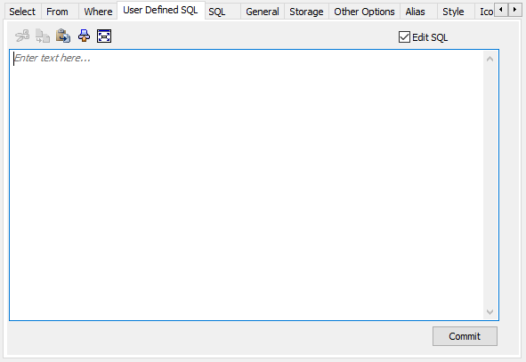

For Oracle models with views and materialized views that have JOINS, GROUP BY and CTE clauses and/or wildcards, you can now run Reverse Engineering from Script (RES) without hampering the resulting model. Such views and materialized views now result into objects with appropriate columns and relationships with tables.
For complex views and materialized views, use the User Defined SQL tab to view and change a user-provided DDL statement.

Select the check box to change the SQL code in the SQL Statement box. Select this check box only if you want the object to contain syntax that erwin Data Modeler cannot represent, for example, a UNION statement. Or Views and Materialized Views with JOINS, GROUP BY and CTE clauses and/or Wildcards.
When you select this check box, you no longer maintain references to the base tables and columns to which the object refers. After updating the SQL code, click Commit.